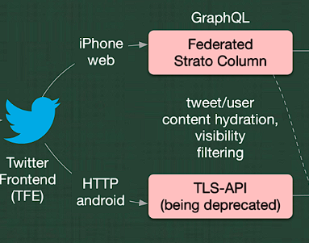
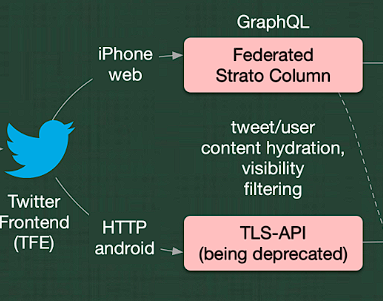
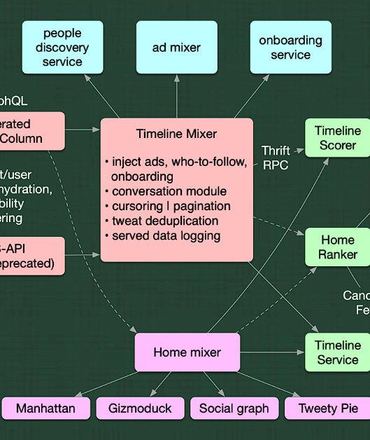
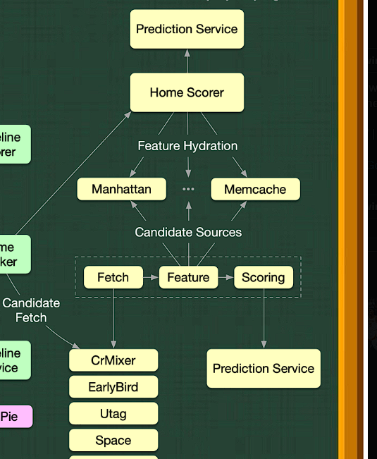

这个是elon发布的架构图
 因为很多字看不清我在twitter上找了位架构师alex xu整理的图 https://twitter.com/alexxubyte/status/1594008281340530688
因为很多字看不清我在twitter上找了位架构师alex xu整理的图 https://twitter.com/alexxubyte/status/1594008281340530688 

1，首先对安卓和iphone用户做了不同的处理，可以说这两个系统是两个应用把，安卓系统是一个原生应用程序，这意味着它是专门为安卓操作系统编写的应用程序，能够直接访问设备硬件和系统资源，安卓用户拥有更高的性能和体验。而 iphone版 twitter感觉就是像是网站web端吧，，它需要依赖浏览器来加载和渲染内容，相对于原生应用程序，它可能会具有一些限制和性能上的劣势。如果twitter的ui代码出问题了，安卓用户应该会直接收到报错吧，这里都针对不同系统的用户有不同的拦截器吧。
他们两个用到访问数据的方式不一样安卓用TLS API，TLS 是一种安全协议，可以很好的保护互联网中的安全信息，安全性相对高，缺点应该就是性能开销大吧，iphone用户用的是GraphQL是一种数据查询语言，可以精确的获取指定的资源，减少服务端响应的数量，提高性能和数量。
2，Timeline Mixer这个模块根据用户向外输出的数据做获取，处理用户的时间线数据，用户时间线数据应该是指用户在Twitter上发布的推文(Tweet转发回复等内容组成的时间序列。在twitter中，每个用户都有自己的时间线，根据用户关注了谁，点进了什么广告，评论过的推文，发布过的推文做分析。这里的onboarding我不是很清楚什么意思。cursoring | pagination 通过cusoring 分页技术提高查询用户的时间线数据。tweet deduplication处理时间线数据的去重，避免同一条推文在用户时间线中出现多次。served data logging记录数据查询和处理的日志信息，以便后续的数据分析和性能优化。最后在把收集的信息提供给”用户发现用户“，”广告推送“，”用户引导“等服务
3，Home Mixer主要负责为用户推荐相关的内容，包括主页上显示的推文、热门话题、推荐用户等。通过分析用户的社交关系、兴趣爱好、历史行为等信息，为用户推荐适合的内容。混合在一起，生成用户的个性化主页
4,timeline mixer和home mixer的数据传到homeranker中，然后它为用户个性化地排序和推荐主页上显示的内容，包括推文、热门话题、推荐用户等。感觉homeranker是个很复杂的算法模型
5,感觉这是机械学系的领域了，homeranker通过某种算法得到homescorer ，而 feature hydration 则是指将这些提取出来的特征与相应的推文信息进行关联，数据会从存储在 memcache 中的缓存中，后期计算的时可以使用？。Home Scorer 会将计算得分后的数据发送到 Manhattan ….
...